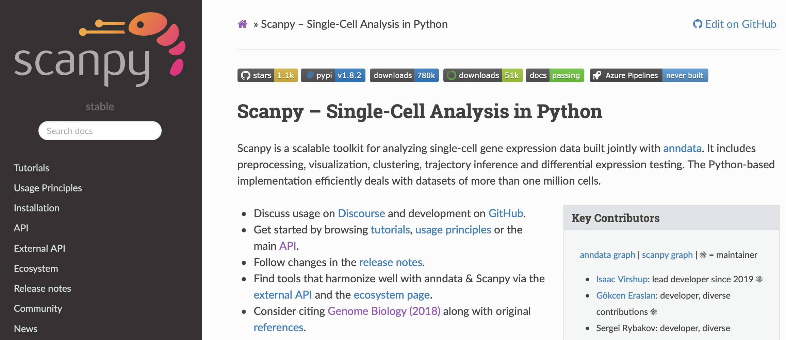

Scanpy API
Explored by:
HUANG, HELEN,MATTHEWS, JAMIE EMOTO,PERRIE, JONATHAN VI-(Bioinformatics 201, Winter-2022, UCLA)

Description:
Scanpy is a general purpose API for various components of the single-cell analysis pipeline; these include:
- Filtering
- Low-dimensional Embeddings
- Clustering
- Marker gene identification
- Plotting
It can be accessed via the website documentation, and the original paper can be found on Genome Biology at this link.
Tutorial:
we created a simple tutorial covering some of these functions for a scRNA-seq dataset, which can be accessed at this link . The tutorial has the following structure:
- Load data
- Filter
- t-SNE vs UMAP computation and plotting
- Cluster into cell types and plotting
- Identify genes important for discriminating into groups
Use cases:
we present two cases centered around analyzing rare cell types.
-
Task: Given a scRNA-seq data set with rare cell types, identify the marker genes Background: To better understand rare cell types, we can identify genes that are distinct in their gene expression profile Goal: Identify marker genes for rare cell types Method: API pipeline with some downsampling to balance class sizes Outcome: Marker genes for rare cell types
-
Task: Given a scRNA-seq data set with rare cell types, construct a trajectory mapping the relationships between all cell types Background: To better understand rare cell types, we can look at their ontological frame with respect to other cell types mapped in some embedding space Goal: Append rare cell types to lineage tree of more common cell types Method: API pipeline with a separate projection of rare cell types to embedding after initial trajectory construction Outcome: Cell type trajectory